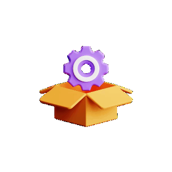
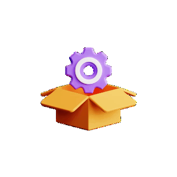
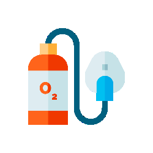
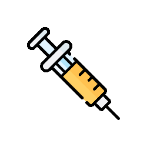
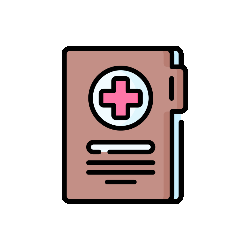
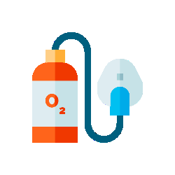
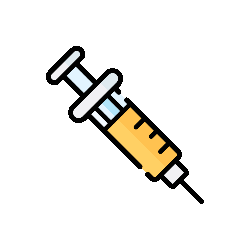
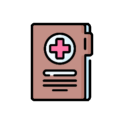
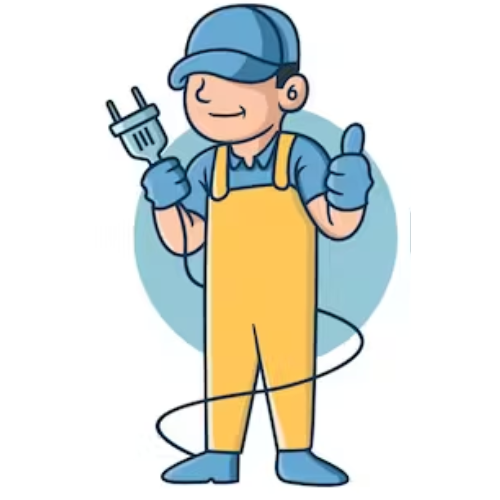

Vishnupedia is Raj. Vishnu Kumar’s micro-biography, highlighting his journey, skills, education, experience, timeline and favorites.
Raj Vishnu Kumar (AKA) RVK Adventurer is a Coimbatore-born nature lover who enjoys traveling, exploring new places, bike riding, creating visually appealing content and capturing memories through photography.

அக்டோபர் 2024 - மே 2025
அனுபவச் சுருக்கம்
உள்ளடக்க எழுத்தாளர் / பத்திரிகையாளராக நான் பல்வேறு பொறுப்புகளை மேற்கொண்டேன் - செய்தி எழுதுவது, பட வடிவமைப்பு, உள்ளடக்கம் எழுதுவது, சமூக ஊடக மேலாண்மை, நிபுணர்களை அணுகுதல், நேர்காணல் ஆதரவு, வணிக பகுப்பாய்வு மற்றும் தரவுகள் பதிவேற்றம். ஒவ்வொரு பணியையும் கீழே சுருக்கமாக விளக்கியுள்ளேன்:
|
செயற்கை நுண்ணறிவு, எலக்ட்ரானிக்ஸ், செமிகண்டக்டர்கள், மின்சார வாகனங்கள், IoT, தொலைத்தொடர்பு, ரோபோடிக்ஸ், PCB வடிவமைப்பு மற்றும் தொடர்புடைய துறைகளில் ஏற்பட்ட முக்கிய முன்னேற்றங்களை இணையத்தில் தேடி, தொழில்நுட்ப ரீதியாக தெளிவான செய்திகளாக எழுதி எங்கள் ஊடக இணையதளமான Circuit Digest (www.circuitdigest.com) மற்றும் IoT Design Pro (www.iotdesignpro.com) இல் பதிவிடுவேன். |
ஒவ்வொரு கதைக்கும் அடிப்படை, அதன் அட்டைப்படம், கட்டுரை படங்கள் மற்றும் சமூக ஊடகப் பதிவுகளுக்கான படங்களை வடிவமைப்பேன், அவை எங்கள் தர அடையாளம் மற்றும் வாசகர்களை கவரும் வகையில் இருக்கும். LinkedIn, Facebook, Twitter, Medium மற்றும் Blogger-ல் சிறப்பாக செயல்படும் வகையில் அவற்றை வடிவமைப்பேன். |
செமிகண்டக்டர்கள், மின்சார வாகனங்கள், ரோபோடிக்ஸ், எலக்ட்ரானிக்ஸ் என்ஜினீயரிங் மற்றும் தொடர்புடைய தலைப்புகளில் ஆய்வு செய்து, நிபுணர்களுடன் நேர்காணல் நடத்தி, அதன்பின் எங்கள் இணையதளம் மற்றும் வெளி தளங்களான Medium, Blogger மற்றும் LinkedIn இல் வலைப்பதிவுகளாகவும், ஆராய்ச்சி கட்டுரைகளாகவும், நேர்காணல் கட்டுரைகளாகவும் எழுதி வெளியிடுவேன். |
|
எங்கள் ஊடக இணையதளங்களில் இருந்து வெளியிடப்படும் அனைத்து செய்திகளையும், கட்டுரைகளையும் மற்றும் எலக்ட்ரானிக்ஸ் திட்ட மேம்பாடுகளை Twitter, LinkedIn, Facebook போன்ற சமூக ஊடகங்களில் பகிர்வேன், ஒவ்வொரு பதிவிலும் இணையதள இணைப்புகளைச் சேர்த்துக் கொண்டு எங்கள் இணையதள வருகையை அதிகரிக்கிபேன். |
பொறியாளர்கள், ஆராய்ச்சியாளர்கள் மற்றும் நிர்வாகிகளை Email மற்றும் LinkedIn மூலமாக அடையாளம் கண்டறிந்து, எங்கள் தொழில்நுட்பக் குழுவுடன் நேர்காணல்களுக்காக ஏற்பாடு செய்வேன். இந்த அமர்வுகள் வீடியோவாகவும் எழுத்து வடிவமாகவும் வெளியிடப்படுகின்றன, மேலும் புதிய தயாரிப்புகள் அல்லது நிறுவன அறிவிப்புகளுக்கு நிபுணர்களை அணுகி அவற்றை செய்தியாக எழுதி அவர்களையும் பங்கேற்க கோரிக்கை அனுப்புவேன். |
எங்கள் கவனப் பகுதிகளுக்குள் உள்ள தொடக்க நிறுவனம் மற்றும் நிறுவப்பட்ட நிறுவனங்களை ஆராய்ந்து, நேரடி நேர்காணல்களுக்காக அவர்களது அலுவலகம் அல்லது தொழிற்சாலைகளில் முக்கிய முடிவெடுக்குநர்களை தொடர்பு கொள்வேன். அவர்களது உற்பத்தி செயல்முறை மற்றும் சூழலை ஒளிப்பதிவு செய்ய ஏற்பாடு செய்து, முடிவில் கட்டுரை மற்றும் வீடியோ வடிவங்களில் எங்கள் இணையதளத்திலும் YouTube சேனலிலும் வெளியிட உதவுவேன். |
|
நேர்காணல் அமர்வுகள் திட்டமிடப்பட்ட பின்பு, தொழில்நுட்ப கேள்வி பட்டியலை தயார் செய்து, தொழிற்சாலை நேர்காணலில் இரண்டாவது கேமராமேன் ஆக ஆதரவு வழங்குவேன். |
எங்கள் நிறுவனத்தின் போட்டியாளர்களின் செயல்பாடுகளை தொடர்ந்து பகுப்பாய்வு செய்து, எங்கள் நிறுவனத்தின் மேம்பாட்டிற்கு தேவைப்படும் விஷயங்களை குறித்த செய்வேன். எங்கள் நிறுவனம் எலக்ட்ரானிக்ஸ் திட்ட போட்டிகளை அடிக்கடி நடத்துவதால், அதன் அனைத்து பங்கேற்புகளை எங்கள் இணையதளத்தில் பதிவேற்றுவதற்கான நிறுவப்பட்ட நடைமுறைகளைப் பின்பற்றி சரியான வகைப்படுத்தலுடன் பதிவேற்றுவேன். |

ஏப்ரல் 2023 - ஆகஸ்ட் 2024
அனுபவச் சுருக்கம்
VTG ZENfra-வில் தரவு மற்றும் வணிக பகுப்பாய்வாளராக நான் தரவின் துல்லியத்தை உறுதி செய்வதில், போட்டியாளர்கள் மற்றும் சந்தை பகுப்பாய்வுகளை நடத்துவதில், வலைத்தள உள்ளடக்கத்தை நிர்வகிப்பதில், ஈர்க்கும் சந்தைப்படுத்தல் பொருட்களை உருவாக்குவதில், மற்றும் பயனர் அனுபவங்களை சீரானதாக மாற்றுவதில் முக்கிய பங்கு வகித்தேன். எனது பொறுப்புகள் கீழே குறிப்பிடப்பட்ட பல்வேறு முக்கிய செயல்பாடுகளை உள்ளடக்கியது:
 

|
தரவுத் தூய்மைப்படுத்தல் நடவடிக்கைகளை நான் முன்னெடுத்து, பெரும் அளவிலான தரவுத்தொகுப்புகளில் உள்ள துல்லியமின்மை மற்றும் தவறுகள் ஆகியவற்றை நீக்கினேன். கட்டமைக்கப்பட்ட தரவு அமைப்பு நடைமுறைகளை செயல்படுத்துவதன் மூலம், தகவல் முறையாக ஒழுங்கமைக்கப்பட்டு எளிதில் அணுகக்கூடியதாக இருப்பதை உறுதிசெய்தேன், இதன் மூலம் வாடிக்கையாளர் பகுப்பாய்வு மற்றும் முடிவெடுக்கும் செயல்முறைகளின் செயல்திறனை மேம்படுத்தினேன் |
YouTube வீடியோக்கள் மற்றும் இணையதள உள்ளடக்கம் உட்பட மற்றும் போட்டியாளர்களின் ஆன்லைன் இருப்பு மூலமாகவும், தொழில் சார்ந்த தரவு மற்றும் வாடிக்கையாளர் கருத்துக்களை மதிப்பாய்வு செய்வதன் மூலமாகவும் விரிவான பகுப்பாய்வு செய்தேன். போட்டியாளர் டாஷ்போர்டுகள் மற்றும் அறிக்கை வடிவமைப்புகளின் ஸ்கிரீன் ஷாட்களைப் படம்பிடித்து ஆவணப்படுத்துவது, மதிப்பாய்வு இணையதளங்களில் இருந்து தகவல்களைச் சேகரிப்பது ஆகியவை இதில் அடங்கும். தொழில்துறை போக்குகள், போட்டியாளர் கருவிகளின் பலம் மற்றும் பலவீனங்களை கண்டறிவதே எனது குறிக்கோள், மூலோபாய முடிவுகளை எடுக்கவும், எங்கள் சந்தை நிலையை மேம்படுத்தவும் இது உதவியது |
|
எங்களின் அதிகாரப்பூர்வ இணையதளத்திற்கான உள்ளடக்கத்தை உருவாக்குதல் மற்றும் நிர்வகிப்பதை நான் மேற்பார்வையிட்டேன், எல்லாப் பொருட்களும் துல்லியமாகவும் புதுப்பித்ததாகவும் இருப்பதை உறுதிசெய்தேன். இணையதளச் செயல்பாட்டைச் சரிபார்ப்பது, சிக்கல்களைக் கண்டறிவது மற்றும் தடையற்ற பயனர் அனுபவத்தைப் உறுதிசெய்வது நிறுவனத் தரங்களை நிலைநிறுத்துவது எனது பணிகளாக இருந்தன |
வலைப்பதிவு இடுகைகள், வழக்கு ஆய்வுகள் மற்றும் விளம்பர ஃபிளையர்கள் உட்பட, எங்கள் சந்தைப்படுத்தல் மற்றும் தகவல்தொடர்பு நோக்கங்களை ஆதரிக்கும் வகையில் பல்வேறு உள்ளடக்கங்களை உருவாக்கினேன். எங்கள் செய்தியை திறம்பட தெரிவிக்கும் மற்றும் எங்கள் பிராண்ட் இருப்பை மேம்படுத்தும் தெளிவான, ஈர்க்கக்கூடிய பொருட்களை வடிவமைப்பதில் எனது பங்களிப்பு இருந்தது |
|
பயனர் வழிகாட்டிகள், தீர்வு விளக்கங்கள் மற்றும் சாட்பாட் உள்ளீடுகள் உள்ளிட்ட விரிவான ஆவணங்களை உருவாக்கினேன். எங்கள் தயாரிப்புகளைப் புரிந்துகொள்வதற்கும் திறம்படப் பயன்படுத்துவதற்கும் நான் உருவாக்கிய ஆவணங்கள் பயனர் பயன்படுத்த எளிதாக உள்ளதா என்பதை உறுதிப்படுத்துவதும், காட்சி கூறுகளால் ஆதரிக்கப்படும் பகுப்பாய்வு அறிக்கைகள் மற்றும் வெளியீட்டு குறிப்புகளை உருவாக்குவதும் எனது பணிகளாக இருந்தன |
எங்கள் கருவிகளின் முழுமையான தரப் பகுப்பாய்வை நான் மேற்கொண்டேன், அவற்றை தொழில்நுட்பக் கண்ணோட்டம் மற்றும் இறுதிப் பயனர் பார்வையில் மதிப்பீடு செய்தேன். நான் குறைபாடுகளை கண்டறிந்து ஆவணப்படுத்தினேன், தீர்வுக்கான டிக்கெட்டுகளை ஒதுக்கினேன் மற்றும் ஒட்டுமொத்த பயனர் அனுபவத்தை மேம்படுத்தவும் தயாரிப்பு தரத்தை உறுதிப்படுத்தவும் மாற்று கோரிக்கைகளை சமர்ப்பித்தேன் |
|
எக்செல் இல் உள்ள தரவுகளை நான் மாற்றி, குறிப்பிட்ட தேவைகளை அடிப்படையாகக் கொண்டு பல்வேறு பகுப்பாய்வு வடிவங்களாக மாற்றினேன். எனது பொறுப்புகளில் பல்வேறு பகுப்பாய்வுத் தேவைகளைப் பூர்த்தி செய்யத் தரவை மாற்றியமைத்தல் மற்றும் கட்டமைத்தல், அறிக்கையிடல் மற்றும் பகுப்பாய்விற்கான துல்லியமான மற்றும் பயனுள்ள தரவு பிரதிநிதித்துவத்தை உறுதி செய்தல் ஆகியவை அடங்கும் |
EOS/EOL தேதிகள், வெபினார்கள் மற்றும் போட்டியாளர் சுயவிவரங்கள் உட்பட பல்வேறு தலைப்புகளில் தரவை ஆதாரமாகக் கொண்டு தொகுத்துள்ளேன். போட்டியாளர் தீர்வுகள், சந்தை விவரங்கள் மற்றும் பாதுகாப்பு இணக்கம் பற்றிய விரிவான தகவல்களைச் சேகரிப்பது, தகவலறிந்த முடிவெடுத்தல் மற்றும் மூலோபாய திட்டமிடலை ஆதரிப்பது ஆகியவை இதில் அடங்கும் |
|
லிங்க்ட்இன் மூலம் சாத்தியமான பொருத்தமான வாடிக்கையாளர்களை நான் கண்டறிந்து சேகரித்தேன். அவர்களின் தேவைகள் எங்கள் தயாரிப்பு சேவைகளுடன் ஒத்துப்போகும் வாய்ப்புகளை இலக்காகக் கொண்டு சேகரித்தேன். எனது முயற்சிகள் எங்கள் விற்பனை வளர்ச்சிக்கு பங்களிக்கின்றன மற்றும் புதிய வாய்ப்புகளை அடையாளம் கண்டு வணிக வளர்ச்சியை ஆதரிக்கின்ற ஒன்றாக இருந்தது |
எங்கள் தயாரிப்புகளின் செயல்பாடுகள் மற்றும் நன்மைகளை காட்டும் வீடியோக்களை நான் உருவாக்கி, தயாரித்தேன். இந்த வீடியோக்கள் பயனர்களுக்கு கல்வி அளிக்கும் கருவிகளாகவும், எங்கள் தயாரிப்பின் மதிப்பை முறையாக விளக்கும் விளம்பரப் பொருட்களாகவும் செயல்பட்டது |
|
தரவுப் பதிவேற்றங்களை கையாள்வது, சித்திரவியல் உள்ளடக்கங்களை உருவாக்குவது, மற்றும் தேவைப்படும் கட்டமைப்பு மாற்றங்களைச் செய்யுவது மூலம் தீர்வு தொகுதி மேலாண்மையில் நான் உதவினேன். எனது பங்களிப்பு தீர்வு தொகுதிகள் துல்லியமாக வழங்கப்படுவதையும், செயல்திறனுடன் பயன்படுத்தப்படுவதையும் உறுதிசெய்தது |
பணிப்பாய்வுகளை மேம்படுத்தவும் தரத்தை மேம்படுத்தவும் முழு தயாரிப்பையும் நான் தொடர்ந்து ஆய்வு செய்வேன். இந்த செயல்முறையில், அம்சங்கள் மற்றும் UI-க்கு சம்பந்தப்பட்ட சிக்கல்களை அடையாளம் கண்டு, அவற்றைச் சமாளிப்பது, கண்டுபிடிப்புகளை ஆவணமாக்குவது, மற்றும் முறைமையாக தயாரிப்பு மேம்படுத்தலுக்கான முழுமையான அறிக்கைகளை வளர்ச்சி குழுவுக்கு சமர்ப்பிப்பது அடங்கும் |

டிசம்பர் 2022 - மார்ச் 2023 ( 4 மாதங்கள் )
அனுபவச் சுருக்கம்
இந்த ஏஜென்சியுடன் ஒரு ஃப்ரீலான்ஸ் உள்ளடக்க எழுத்தாளராக, வாடிக்கையாளர்களுக்காக பல கவர்ச்சிகரமான, தொழில்முறை மற்றும் வாசகர்களுக்கு எளிதான உள்ளடக்கங்களை உருவாக்கியுள்ளேன். கீழே குறிப்பிடப்பட்டுள்ள பல்வேறு வகையான உள்ளடக்கங்களை நான் உருவாக்கியுள்ளேன்:
|
ஒரு ஃப்ரீலான்ஸ் உள்ளடக்க எழுத்தாளராக, நான் பரந்த அளவிலான தலைப்புகளில் ஈர்க்கக்கூடிய மற்றும் தகவலறிந்த வலைப்பதிவு இடுகைகளை வடிவமைத்துள்ளேன், நுண்ணறிவு மற்றும் நன்கு ஆய்வு செய்யப்பட்ட உள்ளடக்கம் மூலம் வாடிக்கையாளர்களுக்கு அவர்களின் இலக்கு பார்வையாளர்களுடன் இணைக்க உதவுகிறது |
பல்வேறு விஷயங்களில் மதிப்புமிக்க நுண்ணறிவு மற்றும் தீர்வுகளை வாசகர்களுக்கு வழங்கும், ஆழ்ந்த அறிவை வெளிப்படுத்தும் உயர்தர கட்டுரைகளை நான் தயாரித்துள்ளேன் |
|
எனது நிபுணத்துவத்தில் நிறுவனத்தின் செய்திகள், நிகழ்வுகள் மற்றும் தயாரிப்பு வெளியீடுகளை ஊடகங்களுக்கும் பொதுமக்களுக்கும் திறம்படத் தெரிவிக்கும் அழுத்தமான செய்தி வெளியீடுகளை எழுதுவது அடங்கும் |
நிஜ உலக வெற்றிக் கதைகளை முன்னிலைப்படுத்தும் விரிவான வழக்கு ஆய்வுகளை நான் உருவாக்கியுள்ளேன், தயாரிப்புகள் அல்லது சேவைகளின் நன்மைகளை நிரூபிக்கும் ஒரு அழுத்தமான கதையை அது வழங்குகிறது |
|
தயாரிப்புகளின் முக்கிய நன்மைகளை முன்னிலைப்படுத்தும் தயாரிப்பு அம்ச உள்ளடக்கத்தை உருவாக்கியுள்ளேன், அவை சாத்தியமான வாடிக்கையாளர்களை மிகவும் கவர்ந்திழுக்கும் |
வாடிக்கையாளர்களால் வழங்கப்பட்ட தகவல்களைப் படிப்பதன் மூலம் நான் சிறந்த இணையதள உள்ளடக்கங்களை மிகுந்த தெளிவுடன் உருவாக்கியுள்ளேன். இந்த இணையதள உள்ளடக்கங்கள் வாடிக்கையாளர்கள் இணையத்தில் தங்கள் கால்தடங்களை உருவாக்க உதவுகின்றன |

ஆகஸ்ட் 2021 - அக்டோபர் 2022 ( 1 வருடம் 3 மாதங்கள் )
அனுபவச் சுருக்கம்
ஒரு தரவு மற்றும் ஆவண ஆய்வாளராக, அமைப்பின் ஆற்றல்மிக்க மற்றும் பல்துறை மீட்புக் குழுவின் ஒருங்கிணைந்த உறுப்பினராக நான் பணியாற்றினேன். எனது பங்கு பல்வேறு வகையான முக்கியமான பணிகளை உள்ளடக்கியது, ஒவ்வொன்றும் நிறுவனத்தின் ஒட்டுமொத்த செயல்திறன் மற்றும் வெற்றிக்கு பங்களிக்கின்றன. நான் கீழே குறிப்பிட்டுள்ள பணிகளைச் செய்துள்ளேன்:
|
தகவலின் துல்லியம் மற்றும் நம்பகத்தன்மையை உறுதி செய்வதற்காக நான் வலுவான தரவு தரக் கட்டுப்பாட்டு செயல்முறைகளை செயல்படுத்தினேன். தற்போதைய தரவுகளுடன் தரவுத்தளத்தை புதுப்பித்தேன், இது வாடிக்கையாளர் தொடர்புகளுக்கான துல்லியமான மற்றும் புதுப்பித்த தகவலை வணிகக் குழு அணுக உதவுகிறது |
மூலோபாய ஆராய்ச்சி மற்றும் அவுட்ரீச் மூலம் சாத்தியமான வணிக வாய்ப்புகளை நான் கண்டறிந்து மாற்றினேன். பொருத்தமான வாடிக்கையாளர்களின் விவரங்களை உன்னிப்பாகச் சேகரிப்பதன் மூலம், எங்கள் சேவைகள் மற்றும் தயாரிப்புகளுக்குத் தகுதியான வாடிக்கையாளர்களை அடையாளம் காண உதவினேன் |
|
வாடிக்கையாளர்களையும் பங்குதாரர்களையும் திறம்பட ஈடுபடுத்தும் வகையில் மின்னஞ்சல் மற்றும் லிங்க்ட்இன் ஆகியவற்றில் சந்தைப்படுத்தல் பிரச்சாரங்களைச் செயல்படுத்தினேன். இந்த முயற்சிகள் அவர்களின் தேவைகளை நன்றாகப் புரிந்துகொள்ளவும், எங்களின் தற்போதைய சேவைகள் மற்றும் தயாரிப்புகளை மேம்படுத்தவும் உதவியது |
எங்களின் மருத்துவ ஆவண மறுஆய்வுச் சேவைக்கான தேவை அதிகமாக இருந்த சமயங்களில், நான் உதவ குழுவில் சேர்ந்தேன். நான் மருத்துவ ஆவணங்களை முழுமையாக மதிப்பாய்வு செய்து, தொழில்துறை தரங்களுடன் இணங்குவதை உறுதி செய்தேன் மற்றும் மருத்துவ உரிமைகோரல்களுக்கான எங்கள் வாடிக்கையாளர்களின் குறிப்பிட்ட தேவைகளை பூர்த்தி செய்தேன் |
|
எங்கள் மருத்துவ மறுஆய்வு சேவையின் மற்றொரு அம்சம் மருத்துவ ஆவணங்களை மின்னணு முறையில் வரிசைப்படுத்துவது. வாடிக்கையாளர்கள் பெரும்பாலும் காலவரிசை அல்லது வழங்குநர் அடிப்படையிலான பல்வேறு ஆர்டர்களைக் கோரினர். வாடிக்கையாளர்களின் தேவைகளுக்கு ஏற்ப எங்கள் குழு இந்த ஆவணங்களை ஒழுங்கமைத்து, மருத்துவத் தகவலை விரைவாகவும் ஒழுங்கமைக்கப்பட்ட பகுப்பாய்வை செய்து தருகின்றது. இந்த நிறுவனத்தில் நான் அதிகம் செலவழித்த செயல்முறை மற்றும் துறை இது |
வாடிக்கையாளர்களிடமிருந்து பெறப்பட்ட மருத்துவ பில்களை ஒருங்கிணைத்து ஒழுங்கமைப்பதன் மூலம் மருத்துவ பில்லிங் செயல்முறைகளுக்கும் பங்களித்தேன். இந்த ஒழுங்கமைக்கப்பட்ட அணுகுமுறை எங்கள் வாடிக்கையாளர்களுக்கு தடையற்ற மருத்துவ உரிமைகோரல்களை செயலாக்க உதவுகிறது |

(2017 – 2018)
அனுபவச் சுருக்கம்
2017 முதல் 2018 வரை PSG மருத்துவமனையில் மருந்தகம் மற்றும் மருத்துவப் பதிவு உதவியாளராக நான் பணிபுரிந்த போது, மருத்துவச் சேவைகளின் திறமையான செயல்பாட்டிற்கு முக்கியமான பல முக்கியப் பொறுப்புகளில் நான் சிறந்து விளங்கினேன்:
 





|
வெளிநோயாளிகள் மற்றும் உள்நோயாளிகள் இருவருக்கும் அத்தியாவசிய மருந்துகள் மற்றும் மருத்துவ உபகரணங்கள் கிடைப்பதை நான் மேற்பார்வையிட்டேன். இது பங்கு நிலைகளை செயலூக்கத்துடன் கண்காணித்தல், பொருட்களை நிரப்புவதற்கு உரிய நேரத்தில் ஆர்டர்களை வழங்குதல் மற்றும் நோயாளியின் தேவைகளைப் பூர்த்தி செய்ய தேவையான அனைத்து பொருட்களும் தொடர்ந்து கிடைப்பதை உறுதி செய்தல் ஆகியவை அடங்கும் |
நோயாளிகளின் தேவைகளை உடனடியாக நிறைவேற்ற, முக்கிய மருந்தகம் மற்றும் செவிலியர் நிலையங்களை ஒருங்கிணைத்து, உள்நோயாளி பிரிவுகளுக்கு மருந்துகள் மற்றும் மருத்துவ உபகரணங்களின் விநியோகத்தை நான் நிர்வகிக்கிறேன். நேரடி வருகைகள் மூலமாகவோ அல்லது நியூமேடிக் அமைப்புகளைப் பயன்படுத்துவதன் மூலமாகவோ, ஒரு மென்மையான மற்றும் திறமையான விநியோகச் சங்கிலியை உறுதிசெய்கிறேன் |
|
சரக்குகளை நிர்வகிப்பதற்கு கூடுதலாக, மருந்தக பில்களை செயலாக்குவதில் நான் உதவினேன். நான் ஒரு மருந்தாளுநராக இல்லாவிட்டாலும், தேவையான மருந்துகள் மற்றும் உபகரணங்களைச் சேகரித்து, மூத்த மருந்தாளுனர்களின் சரிபார்ப்புக்காக அவற்றைச் சமர்ப்பிப்பேன், மேலும் ஆர்டர் செய்த நோயாளிகளுக்கு பில்களை க்ளியரன்ஸ் செய்ய வசதி செய்தேன் |
நோயாளிகளின் மருத்துவப் பதிவுகள் விநியோகம், மருத்துவப் பதிவேடு துறையின் நூலகத்திலிருந்து நகல் கோப்புகளை மீட்டெடுத்து, சம்பந்தப்பட்ட மருத்துவர்களிடம் வழங்குவதை நான் கையாண்டேன். இந்த பணியானது நியூமேடிக் அமைப்புகளைப் பயன்படுத்துதல் அல்லது தேவைக்கேற்ப நேரில் பதிவுகளை வழங்குதல் ஆகியவை அடங்கும் |
|
நோயாளியின் தட்டச்சு மருத்துவ பதிவுகளின் வாழ்க்கைச் சுழற்சியை நான் துல்லியமாக நிர்வகித்தேன். மருத்துவர்களுக்கு விநியோகிக்கப்பட்ட கோப்புகளை கண்காணிப்பது, நூலகத்திற்கு சரியான நேரத்தில் திரும்புவதை உறுதி செய்தல் மற்றும் விநியோகத்திற்கு தயாராக இருக்கும் கோப்புகளை நிர்வகித்தல் ஆகியவை இதில் அடங்கும். தரவு தனியுரிமை மற்றும் சேமிப்பக இட மேலாண்மை நெறிமுறைகளுக்கு ஏற்ப, நூலகத்திலிருந்து காலாவதியான பதிவுகளை (குறிப்பிட்ட பல ஆண்டுகளாகப் பயன்பாட்டில் இல்லாத கோப்புகள்) அகற்றி, அவற்றை மறுசுழற்சி செய்வதற்கு வசதியாக ஒரு வழக்கத்தையும் செயல்படுத்தினேன் |
|
 ஒன்பதாம் வகுப்பிலிருந்து, ஸ்விட்ச் பாக்ஸ்கள் மற்றும் ஸ்க்ரூ செட்களை இணைக்கும் பணி ஆர்டர்களை முடித்து பணம் சம்பாதித்தேன். நான் முடித்த வெற்றிகரமான இணைப்புகளின் எண்ணிக்கையின் அடிப்படையில் எனது வருவாய் இருந்தது. வார இறுதி நாட்களிலும் தேர்வு விடுமுறை நாட்களிலும் இந்த வேலையை நான் செய்தேன், வாழ்க்கையின் பொறுப்புகளை ஏற்றுக்கொள்வதில் எனது அர்ப்பணிப்பை வெளிப்படுத்தினேன் |
11ம் வகுப்பில் இருந்து பள்ளிக் குழந்தைகளுக்கு ஹோம் டியூஷன் எடுத்தேன். ஆரம்பத்தில், நான் மூன்று மாணவர்களுக்கு கற்பித்தேன், ஆனால் எனது வழிகாட்டுதலின் கீழ் அவர்களின் குறிப்பிடத்தக்க கல்வி மேம்பாடுகள் காரணமாக, LKG முதல் 9 ஆம் வகுப்பு வரையிலான 10 மாணவர்களுக்கு கற்றுக்கொடுக்கும் அளவிற்கு மாறியது. இந்த மாணவர்களுக்கு கற்பிப்பதற்காக நான் 1.5+ வருடங்களை அர்ப்பணித்தேன், ஆனால் எனது 12ஆம் வகுப்பு பொதுத் தேர்வுகள் நெருங்கியதால், எனது தேர்வுகளுக்கு தயார் செய்ய கவனம் செலுத்த, நான் கற்பிப்பதை நிறுத்தினேன் |
 எனது கல்லூரிப் பருவத்தில், நான் இந்தியாவில் உள்ள ஒரு முக்கிய உணவு விநியோக சேவை வழங்குனரிடம் உணவு விநியோக நபராக சிறிது காலம் பணியாற்றினேன். எனது பகல்நேர கல்லூரி கடமைகளை மேற்கொண்டபின், மாலை 7 மணி முதல் இரவு வரை உணவு விநியோக நபராக பணியாற்றினேன். இந்த வேலையின் மூலம் கிடைக்கும் வருமானம் எனது சிறிய செலவுகளுக்குப் பயன்படுத்தப்பட்டது |
 கல்லூரிக்குப் பிறகு, CAP Digisoft Solutions இல் தரவு மற்றும் ஆவண ஆய்வாளராக எனது பணியைத் தொடங்குவதற்கு முன், சிறிது காலம், கட்டிட மேற்பார்வையாளராகப் பணியாற்றினேன். இந்த வேலையில், நான் கட்டுமான பணிகளை மேற்பார்வையிட்டேன், மூலப்பொருட்கள் கிடைப்பதை உறுதி செய்தேன். கட்டுமானப் பொருட்கள் வாங்குதலில் மற்றும் பிற வேலை தொடர்பான பணிகளுக்கு நான் பொறியாளருக்கு உதவி செய்தேன். இந்த குறுகிய கால வேலையிலிருந்து, கட்டுமான செயல்முறை பற்றிய அடிப்படை அறிவையும் கற்றுக்கொண்டேன் |